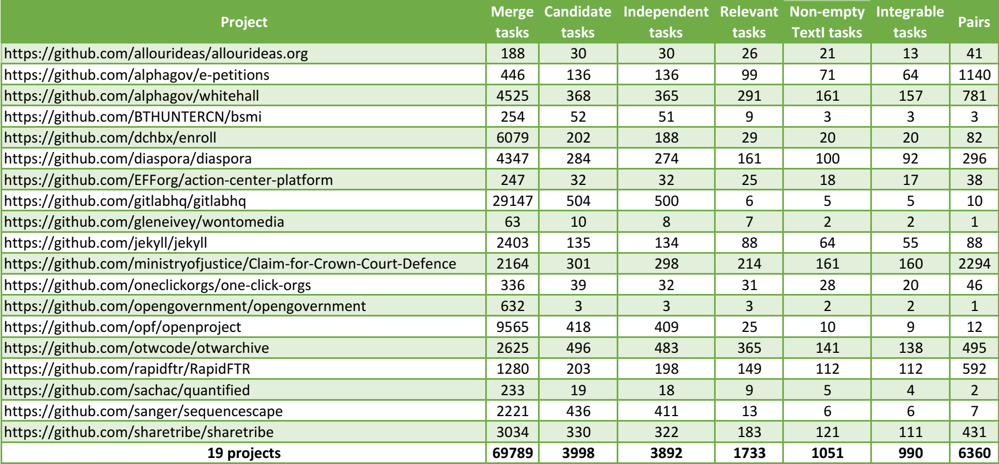
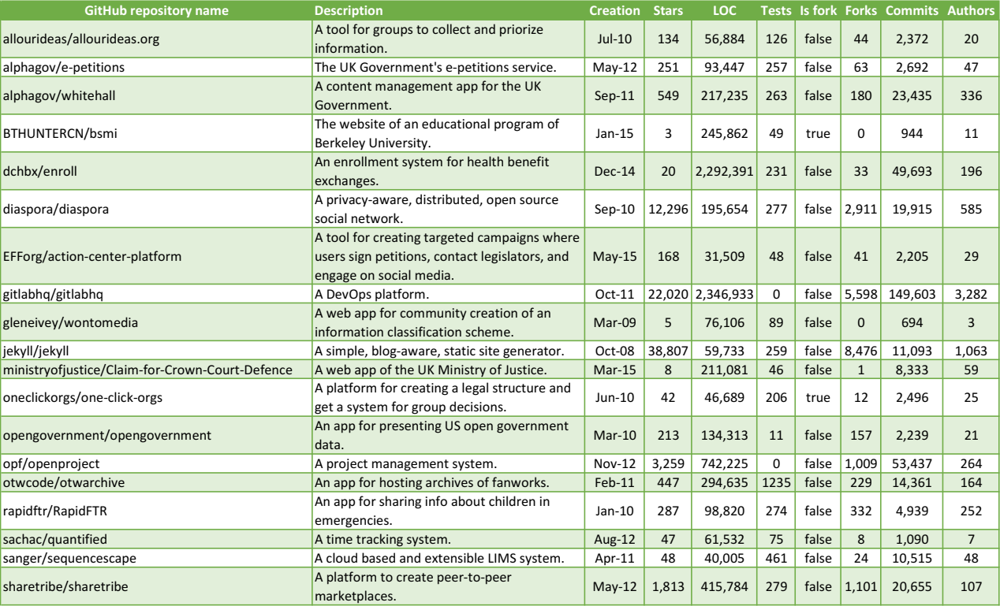

Construction of task pair sample
Following we provide detailed information about the construction of our task pair sample.
Task extraction and further project selection
- Analyzed merges
- Number of merges and tasks per project
- Extracted tasks per project After task extraction, we remain with 40 projects that have at least two independent tasks.
Collecting task data
- Relevant tasks per project
- Non-empty TextI tasks per project
- Integrable tasks per project After filtering out projects with less than two integrable tasks, we remain with 19 projects.
Task pair sample
- Overview of sample construction
- Selected merge tasks
- Data of selected tasks (changed files set, TestI, and TextI)
- Overview of integrations per project

While constructing our task sample, we do not systematically target representativeness and diversity. Even so, we observe some variety concerning the attributes:

Note that we extracted these projects' information on October 2019 instead the time we collected the sample.